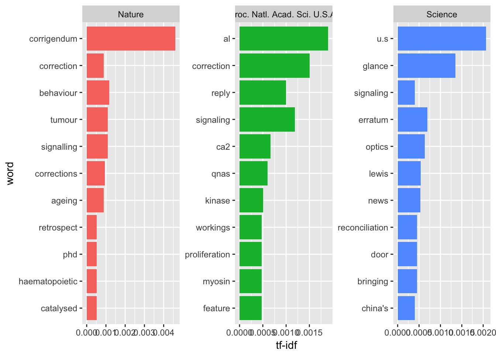
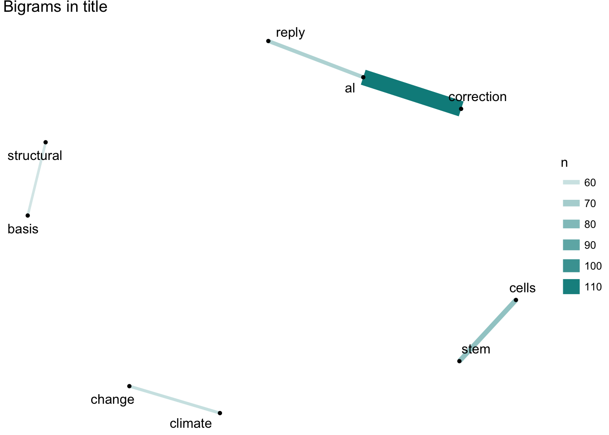

读文献是科研人员的基本功，一方面是了解学科发展，另一方面更现实一点，就是为了发文章。起步阶段读论文一般是模仿与学习，但到了中后期如果你的视野不够开阔，很容易陷入到安全区陷阱，认为自己做自己那一小摊就挺好，其实很有可能大浪过来，全军覆没，说直白点就是申不到钱，课题与项目运转不下去，思路也会枯竭。当你去开学术会议时，那些大会报告的报告人的开场总有个全局概览的视野，这种评论是需要经验去堆的，但其实也挺虚的：你回头去看容易知道哪里有坑哪里有丘，但身处时代浪潮之中是不太容易感知趋势的。
但传统基于核心关键词的检索跟全局观是本质相悖的，核心关键词往往限制了内容，虽然有利于聚焦但不利于发散与概览。不过当前文献数据空前开放，如果你有类似全局视野问题，是可以自己探索的。这里要用到一个名为自然语言处理（NLP）的工具，简单说就是我不去看单篇文献或荟萃分析，而是通过语义关系探索大量文献中的潜在模式，进而找出热点。今天我用pubmed这个免费的文摘数据库来做个演示，探索下科学研究的整体前沿，结论不一定对，但方法思路如果你能掌握并举一反三，会有发现新大陆的感觉。
数据获取
数据获取思路是这样的：如果想知道整体前沿，最需要的是综合类期刊，全文的数据量我的笔记本也跑不了，就考虑摘要，这样也过滤了那些没有摘要的评论与观点，更多关注研究性论文。期刊选择为综合类的《科学》、《自然》与《美国科学院院刊》，收集2016年一整年的论文摘要，用easyPubmed包来搜索并整理成相对干净的数据集。这里我只收集了题目、摘要、出版期刊与日期进行文本数据挖掘。
## # A tibble: 8,815 x 6
## title
## <chr>
## 1 A high-throughput small molecule screen identifies synergism between DNA me
## 2 2017 sneak peek: What the new year holds for science.
## 3 Wolf transplant could reset iconic island study.
## 4 Scientists in Germany, Peru and Taiwan to lose access to Elsevier journals.
## 5 How scientists use Slack.
## 6 Saliva protein biomarkers and oral squamous cell carcinoma.
## 7 Reply to Galvão-Moreira and da Cruz: Saliva biomarkers to complement the vi
## 8 Cell morphology drives spatial patterning in microbial communities.
## 9 Deborah S. Jin 1968-2016: Trailblazer of ultracold science.
## 10 Autophagy wins the 2016 Nobel Prize in Physiology or Medicine: Breakthrough
## # ... with 8,805 more rows, and 5 more variables: abstract <chr>,
## # year <chr>, month <chr>, day <chr>, jabbrv <chr>发文量
首先我们先看看着三份期刊的发文量：

这三份期刊里，PNAS发文量最大，占总数一半。
高频词
然后我们看一下各期刊的前十大摘要高频词：

这里解释一下，如果我们单纯寻找高频词其实这几个期刊都应该差不多，但这里我们用的是TF-IDF来加权筛选，这个加权不严谨的说就是这个词出现在该期刊的词频与出现在所有期刊词频的比例，通过这个值我们可以找到单个期刊比较重要的词。我们可以看到肿瘤与行为均出现在三个期刊的十大关键词中，推测相关研究应该是去年的重点。此外，《自然》与《美国科学院院刊》都出现了模型这个词。就特色而言，《自然》去年更关注造血过程、信号传递与衰老问题；《科学》杂志则关心磷酸化、spo11蛋白与火山口还有小尺度问题；《美国科学院院刊》主题特色不算明显，但比较喜欢强调研究重要性。
如果我们只考虑题目里的文字呢？

这里我们可以看出，《自然》上的论文题目跟摘要内容契合度比较高；《科学》上论文题目喜欢出现中美的国家标签；《美国科学院院刊》看意思题目里专业名词比较多。此外，三份期刊的题目里都出现了勘误，这倒是前沿高影响力期刊的特点：容易被质疑。
词关系
看完整体你应该想到，单个词并非孤立，那么这些词之间会不会有相关性呢？这个问题我们也可以用NLP工具来研究：
 其实这个技术更常见，平时你用的输入法就实现去考察一些字词的关系，然后让其出现的排序更符合常识。这里我们可以看到，从题目里我们能看到气候变化、干细胞以及前面提到的勘误问题。从摘要里我们则会发现大多数是生物相关的主题，也就是前沿科研应该是生命科学在导向。但到目前为止我们都是把这一些文本当成一个整体，但科学是分科的，也就是有不同的主题，此时我们就要用到主题模型来探索去年前沿科研关注的主题分类。
其实这个技术更常见，平时你用的输入法就实现去考察一些字词的关系，然后让其出现的排序更符合常识。这里我们可以看到，从题目里我们能看到气候变化、干细胞以及前面提到的勘误问题。从摘要里我们则会发现大多数是生物相关的主题，也就是前沿科研应该是生命科学在导向。但到目前为止我们都是把这一些文本当成一个整体，但科学是分科的，也就是有不同的主题，此时我们就要用到主题模型来探索去年前沿科研关注的主题分类。
主题模型分类
所谓主题模型，就是通过探索字词间内部关系对文本进行分类的模型，举例来说某个潜在的主题包含7个关键词，如果某篇文章命中6个，那么这篇文章大概率就属于这个潜在主题。当然，现实生活我们并不知道这些潜在主题会是什么，但通过隐含狄利克雷分布，也就是LDA方法我们就可以去探索结构，然后去拟合实际经验。

从上面我们可以看出，有些探索出来的主题大概我们知道是哪个领域的，有些则属于误判或者说界限不明显的综合领域，这说明跨学科研究正在崛起。其中，我能识别出来的主题大体有癌症、脑科学、病毒、社会行为、基因组、膜蛋白结构、气候变化、进化、动态系统、材料。总体来看，细胞生物学与分子生物学还是主流，但病毒、气候变化等问题导向的学科也在发展。其实也可以直接分析10年的时间变化趋势，不过这个就留成课后题吧（其实是我个人电脑跑不动）。
情感分析
一般认为科研人员都是比较乐观的，但其实文字背后究竟是否乐观可以用文本的情感分析来回答。这个分析的原理就是事先找个标注过情感的语料库，然后通过语料库与词频来分析具体文本的情感倾向性。正常这个语料库是要自己根据语境去构建的，例如商品的好评差评，但作为资深懒汉，我直接用了现成的AFINN语料库：

结果基本符合乐观为主的预期，不过按说有些词在科研中属于中性词，我们可以通过这个分析来考虑论文写作的用词方法。
其他
其实这只是一个很初步的分析，我甚至没用用到引用与被引用的关系，也没有考虑作者与研究机构的时空分布特征，但类似这样的文本分析应该是一个现代科研人员所具备的属性。这种分析的好处在于你不是在采样，而是直接分析所拥有的整体，也就几十兆的文本量，如果你电脑跑得动，把十年二十年的文献沿革都可以概览一下，这是这个时代给我们的红利，不要白不要。
你可以研究一个大牛几十年的论文发表来发现其独到的眼光；也可以针对某个期刊挖掘其关注点的变更；还可以构建自己认可的课题组的文献库，通过其发表内容探索同行那些自己都没意识到的行为改变。这个时代学科内的经验贬值飞速，很多东西没必要闭门造车慢慢悟，利用开放数据的便利性你可以很快了解整体学术动态，这样不至于随波逐流。更麻烦的是如果你不懂而别人懂，那你将很容易体会到别人眼神中的怜悯，做一个好奇心使然的科研人员，现在起步从来都不晚。
更重要的是，这类技术本质是让你满足好奇心的，你可以用这个来了解社会，例如纽约时报就给个人提供API，你可以看看其对川普用词风格的变化；为什么最近比特币搜索指数集中在拉美？欧洲吸引难民究竟是政治正确还是劳动力人口不足？不要等着看新闻来指导自己，要学会发现生活中的闪光点；不要通过键盘上情感喧嚣来面对社会，要用键盘甚至语音编程（我果然很自然的想到了最懒的方法）从繁复的公开数据中挖掘趋势；不要总是等着大牛来带，在未知的领域人人都可能成为大牛，你需要掌握一些实现方法而已，你甚至不需要太了解算法细节（会忘，比如我），但要有自己的兵器库随想随用。你不需要带着目的性去学，这说到底只是一种生活方式，你变强了也秃了的可能性是存在的（你能否感到我最近在看漫画）。
本文实现代码可见我的Github。
想要了解世界吗？想要的话可以全部給你，去找吧！我把所有的线索都放在互联网上了。